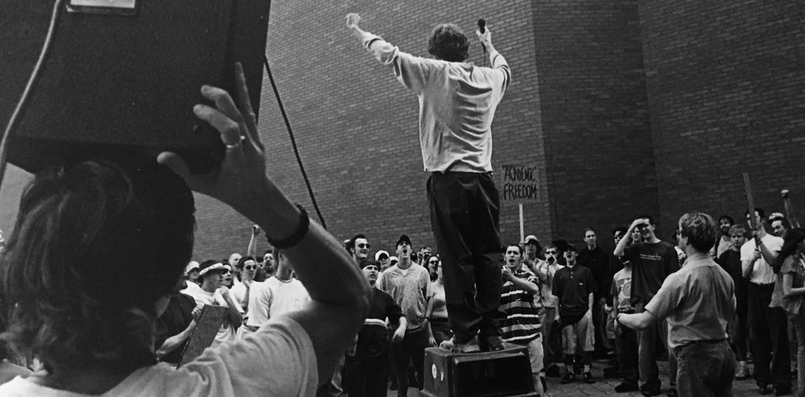

Résumé
Shea Gunther
Designer, publisher, podcaster, writer, entrepreneur, carpenter — and, right now, building Loop MMT. The career doesn't have a specialty running through it; it has a habit: walk into an unfamiliar domain and build a real structure in it. The thread is coordination — holding the whole picture while managing the parts.
Experience
The Department of FWWC, Inc.
Co-founder, CEO, Chief Designer
Developed Loop MMT — Multi-Module Theory — an antifragile cognitive operating system that uses AI and determinism as its processor and git as its state and store.
Willard Square Home Improvement
Carpenter
Renovated a six-unit apartment building — framing, finish work, flooring, siding, sheetrock, trim. Similar jobs on projects around South Portland.
The Grove at Shaker Woods
Developer, Designer, Owner
Found and acquired fifty acres in New Gloucester, Maine to build a high-end camping resort. Wrote the business plan, act as general contractor, and designed and built all of the features and infrastructure.
MJToday Media
Publisher, Host, Owner
Started a profitable podcast company; produced business and marketing podcasts.
4Front Publishing
Publisher
Conceived and developed a popular industry newsletter; planned a daily business-news site.
Mother Nature Network
Writer
Renewable energy, climate, politics, and tech for the largest environmental news site on the internet (7M+ readers a month).
Green Options
Founder, Publisher
Designed the editorial voice and site architecture and art-directed the branding for a VC-funded sustainability blog; built and ran a large reader community; wrote and ran the marketing plan.
Renewable Choice Energy
Co-Founder, Director of Marketing
Owned all branding and graphics — site, sales material, advertising — and ran a residential marketing campaign that drew thousands of customers. Later acquired by Schneider Electric.
Zoom Culture
Co-Founder, Director of Production
A dot-com-era video-technology company. Helped raise roughly $10M in venture capital; worked across design and technology; ran the video-production department.
Education
University of Southern Maine
Computer Science
Rochester Institute of Technology
Graphic Design
University of New Hampshire
Computer Science
Volunteering & Coaching
Falmouth Middle School Ultimate
Founder, Head Coach
Built Falmouth elementary and middle-school ultimate to 60+ players on two teams; taught 2,700+ students to play as a volunteer coach.
Rochester Cannabis Coalition
Founder
Founded the Rochester Cannabis Coalition at the Rochester Institute of Technology — the student group that became the first chapter of Students for Sensible Drug Policy (SSDP), now a global student network across 300+ campuses in 32 countries. Recognized as one of SSDP’s founders.
